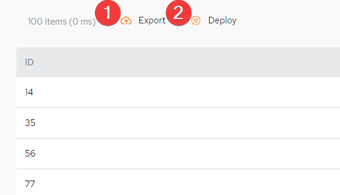

This part of the system allows you to execute a SQL query against the data in the Space.
Fill in the data query parameters, as shown below.
(Source drop-down list) – select which GigaSpaces Space object the query should be executed against.
(Load Query drop-down) - if there have been previous queries saved, they can be accessed from here.
(Body of the query) – enter a SQL-99 compliant query. What is displayed initially is sample syntax.
Retrieve first – limit the query response to the desired number of rows. A maximum of 10,000 rows can be retrieved.
Run Query - run the query
Save Query - save the query to be used in the Load Query drop-down
Click Run Query to execute the query. The query results will appear as shown below.

When viewing the query results, additional options is available:
Export – export the query result locally to a csv-format file
Deploy – allows a service to be created and deployed from a data query, that will then appear in the list of Services in the Service menu. When clicking Deploy the following screen is displayed:

Fill in all the details and click Create Service. You will then be redirected to the Service & Microservices main menu where you will see your new service listed with the Status of Created.
For details about the next step of service deployment, see